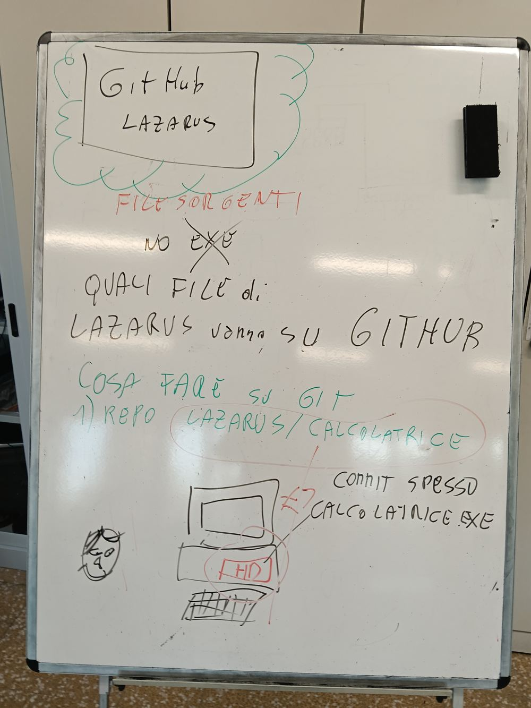

La lavagna di oggi: la finestra della calcolatrice versione 1.0
La finestra (form) ha tre caselle Edit: N1 (primo numero), N2 (secondo numero) e TOTALE (il risultato).
Ha due bottoni (Button): + (più) e × (per).
Quando premi un bottone, il programma legge N1 e N2, fa il conto e scrive il risultato in TOTALE.
02 StrToInt e IntToStr: testo e numeri
Quello che scrivi in una casella Edit è testo, anche se sono cifre: «12» è come una parola.
Con il testo non si fanno i conti. Prima va trasformato in numero: StrToInt (da testo a numero intero).
Il risultato è un numero. Per scriverlo nella casella va ritrasformato in testo: IntToStr (da numero intero a testo).
Il giro è sempre lo stesso: testo → StrToInt → conto → IntToStr → testo.
03 Il codice della versione 1: più e per
procedure TForm1.ButtonPiuClick(Sender: TObject);
begin
Edit3.Text := IntToStr(StrToInt(Edit1.Text) + StrToInt(Edit2.Text));
end;
procedure TForm1.ButtonPerClick(Sender: TObject);
begin
Edit3.Text := IntToStr(StrToInt(Edit1.Text) * StrToInt(Edit2.Text));
end;
Edit1 è N1, Edit2 è N2, Edit3 è TOTALE.
Il codice di ogni bottone si scrive con un doppio clic sul bottone nel form.
Prova con Esegui: 7 + 5 = 12, 7 × 5 = 35.
04 La versione 2: meno e divisione intera
procedure TForm1.ButtonMenoClick(Sender: TObject);
begin
Edit3.Text := IntToStr(StrToInt(Edit1.Text) - StrToInt(Edit2.Text));
end;
procedure TForm1.ButtonDivClick(Sender: TObject);
begin
if StrToInt(Edit2.Text) = 0 then
Edit3.Text := 'Non si divide per zero'
else
Edit3.Text := IntToStr(StrToInt(Edit1.Text) div StrToInt(Edit2.Text));
end;
div è la divisione intera: dà solo la parte intera, senza virgola. 7 div 2 = 3.
Dividere per zero non si può: il programma andrebbe in errore. Per questo prima controlliamo se N2 è 0 (if … then … else).
05 Il tuo PC e GitHub

La lavagna: su GitHub vanno i file sorgenti, niente .exe; repository lazarus, cartella calcolatrice; commit spesso
Quando lavori con Lazarus, il programma sta sul tuo PC, nel disco fisso (HD): lavori in locale.
GitHub è su internet: una copia del progetto che resta al sicuro anche se il PC si rompe.
I due posti non si aggiornano da soli: sei tu a portare i file dal PC a GitHub.
Su GitHub vanno solo i file sorgenti: .lpi, .lpr, .pas, .lfm. Il file calcolatrice.exe NO: Lazarus lo rifà quando premi Esegui.
Apri la pagina guidata: La calcolatrice su GitHub. Ogni passo si apre solo quando quello prima è giusto.
La prima volta: crea la cartella con «Add file», «Create new file», nome calcolatrice/README.md, «Commit changes».
Poi entra nella cartella calcolatrice: «Add file», «Upload files», «choose your files», scegli SOLO i 4 file con Ctrl, «Commit changes».
Ogni volta che una cosa nuova funziona: Ctrl + S sul PC, poi ricarichi i 4 file su GitHub con un messaggio che dice che cosa hai cambiato (es. «aggiunto il bottone per»).
07 La release: v1.0 e v2.0
Una release è una versione finita e funzionante, con un numero.
Versione 1 (più e per): nel repository lazarus, a destra, «Releases», «Create a new release», «Choose a tag», scrivi v1.0, «Create new tag», titolo «Calcolatrice versione 1», «Publish release».
Versione 2 (anche meno e divisione intera): lo stesso con v2.0.
08 Sai spiegarlo?
A che cosa servono StrToInt e IntToStr?
Che differenza c'è tra salvare con Ctrl + S e fare un commit?